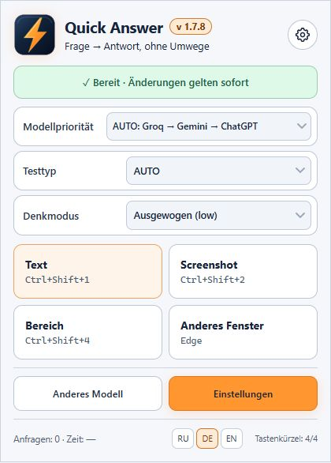

Installation
ZIP entpacken und ohne Administratorrechte laden.
›BROWSERERWEITERUNG · Windows 11 · Microsoft Edge · 1.7.8 Edge · Desktop 0.1 Preview
Schnelle Antworten direkt im Browser
Quick Answer analysiert Text und Screenshots in Microsoft Edge. Wähle ein Modell, nutze Tastenkombinationen und erhalte kurze Antworten.
Preview-Version. Prüfe die Modellantworten, schütze vertrauliche Daten und beachte die Testregeln.


ZIP entpacken und ohne Administratorrechte laden.
›Text, Screenshot, Bereich oder anderes Fenster.
›Automatische Erkennung, Nummerierung, kurze Begründungen.
›Groq → Gemini → ChatGPT, sofern verbunden.
›Antwortzeit, Limits und Fehleranalyse.
›Quick Answer analysiert Text und Screenshots in Microsoft Edge. Wähle ein Modell, nutze Tastenkombinationen und erhalte kurze Antworten.
Schlüssel liegen im Edge-Profil; Texte und Bilder werden an den gewählten Anbieter gesendet.
Loslegen →Desktop-Archiv entpacken und START_QuickAnswer.cmd starten. Benötigt Windows 10/11, Windows PowerShell 5.1, WinForms und .NET Framework. Keine kompilierte EXE. Strg+Alt+1: Bildschirm; 2: aktives Fenster; 4: Bereich. Schlüssel: DPAPI CurrentUser. Bilder werden an den gewählten Anbieter gesendet. Laufzeit, Anbieter, DPI und Tastenkürzel sind ungeprüft. Die mitgelieferte Bridge akzeptiert nur Browser-Erweiterungen; Desktop ist derzeit inkompatibel.